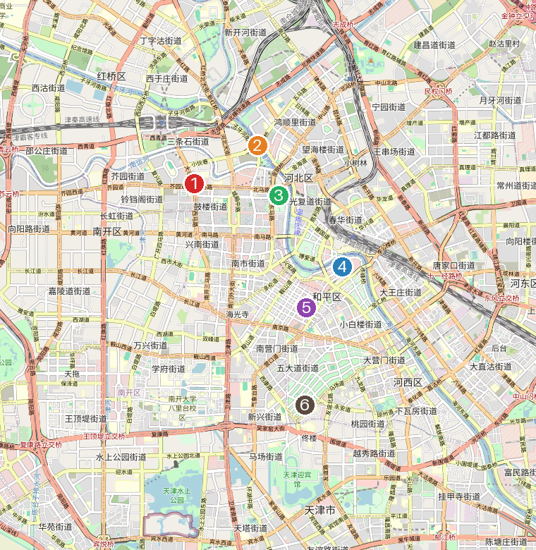

天津之眼 · 世界唯一建在桥上的摩天轮
天津依海河而建，是一座「中西合璧、古今交融」的城市——既有「万国建筑博览会」的百年小洋楼，也有相声、快板、泥人张的市井烟火，还是闻名的「早点之都」。一条海河串起摩天轮、津湾夜景与意式洋楼，特别适合慢悠悠地 City Walk。
必打卡景点

五大道
成都道、重庆道、常德道、大理道、睦南道等组成的洋楼街区，2000 多栋风格各异的小洋楼，被称为「万国建筑博览会」。最佳玩法是租一辆共享单车或坐马车慢逛，打卡民园广场、庆王府。

意大利风情区
中国唯一保存完整的意式租界，马可·波罗广场、罗马柱廊与欧式洋楼遍布，梁启超「饮冰室」也在此。白天拍照出片，入夜后咖啡馆、酒吧亮灯，是天津最有情调的夜区。

古文化街 · 鼓楼
天津年味与民俗的发源地，青砖灰瓦的仿古老街汇集泥人张、杨柳青年画、风筝魏、十八街麻花，街内的天后宫是天津的「母亲庙」。旁边的鼓楼是老城厢地标。

瓷房子
一座用数千万片古瓷片、数百件瓷器与水晶玛瑙镶嵌而成的法式洋楼，奇幻华丽，是天津人气最高的拍照点之一，出片率极高。位于赤峰道，离五大道很近。

滨海图书馆
因中庭层层叠叠的「书山」阶梯和巨型球形报告厅红遍全球，被称为「滨海之眼」。位于滨海新区，建议与国家海洋博物馆安排在同一天，预留往返通勤时间。

海河 · 津湾广场
海河是天津的母亲河。沿岸的津湾广场、解放桥、世纪钟连成一片璀璨夜景；傍晚乘海河游船夜游，可一次看遍两岸欧式建筑与摩天轮灯光。
地道美食
正宗煎饼果子（绿豆面摊皮 + 鸡蛋，夹馃箅儿或油条）、嘎巴菜（锅巴菜）、老豆腐、茶汤。地道味道藏在西北角（回民聚居区）的早点摊。
百年老字号，尝鲜即可——价格偏贵，本地人日常其实很少吃。
香酥麻花是经典伴手礼；耳朵眼炸糕外脆里糯，趁热吃最香。
罾蹦鲤鱼、八珍豆腐、独面筋等本帮菜，体验「卫嘴子」的讲究。
天津早点 · 去哪吃

煎饼馃子 · 绿豆面摊皮 + 现磕鸡蛋 + 馃箅儿
天津早点的「圣地」是 西北角（红桥区回民聚居区）——清早整片都是摊子，煎饼馃子、嘎巴菜、老豆腐、卷圈一条龙。越早越好（建议 7–9 点，常 10–11 点就卖完收摊），站着吃是常态，带点现金更稳妥。
红桥区非遗，招牌「至尊牛肉煎饼果子」；芥园道新春花苑底商。旁边的二嫂子等老摊也常年排队，跟着本地队伍走基本不踩雷。
百年老字号（相传慈禧御赐名），南市食品街，约 06:30 开门。招牌素包，也有煎饼果子、锅巴菜——想坐下来、环境干净点的选它。

嘎巴菜（锅巴菜）· 天津独有的早点，外地基本吃不到
嘎巴菜（锅巴菜）创始老字号，招牌嘎巴菜 + 老豆腐，人均约 ¥13。总店在南开区北马路、大胡同交叉口（「东北角」），另有南丰路店。
卤子用葱油、锅巴自家现摊，老味道，西北角片区的人气早点。
认准「绿豆面摊皮 + 现磕鸡蛋 + 馃箅儿/馃子」，别要香肠生菜的「改良款」。
想吃地道往西北角、洪湖里等居民区钻；古文化街里的早点偏游客款。
跟着 B站博主吃 · 团团的一家-团团记
天津本地美食 UP 主「团团的一家-团团记」（B站约 72 万粉，签名「愿望：做一个安安静静地吃货」）专拍本地视角的家常 + 街头吃食，最出圈的是「天津早点吃法教程」系列——讲究的不是贵，而是本地人怎么「正确地吃」。从他几十条视频里挑出最值得照着打卡 / 复刻的：
招牌内容。其中「方便面篇」播放破 600 万，另有嘎巴菜、减脂鸡丝烧饼、煎饼果子配羊肉串等。看完再去西北角点单，基本不露怯。
他反复安利的本地特色：用果干现熬、带冰碴，搭配「酸磨糕」，清爽开胃，和外地浓缩冲泡款完全两回事。夏天来天津值得找一杯。
嘎巴菜有专门「吃法教程」；面茶他提醒「一定要慎重」（口味独特、不是人人爱）；芥末三丝够呛，是本地下饭下酒的家常凉菜——想试地道天津味可照着点。
他偏爱人均不高的本地小馆和小吃街（市中心小吃街、滨江道金街、芦台 / 宁河大集），主打实在、便宜、有人情味，比纯网红店更接近天津人的日常。
团团记「出门吃」的地方
他大多在家做饭，真正出门吃、又是你旅游能照着去的，主要就这些（多为街头 / 本地小馆，他一般不报店名，所以标的是片区 + 类型）：
市中心步行街，好找好逛；评论区本地人点名老字号「天宝楼」买津酱肉。离西北角约 3.5km（东南向）。
干煸鱿鱼须（要「没翘头」满满一盘）、八珍豆腐、独面筋——40 万播放那条的招牌。随便找家地道津菜馆都点得到。
都是「类型 + 氛围」型：小吃街图烟火气、夜市撸串配啤酒、泥炉烤肉是东北吃法。到地儿找摊即可。
路边摊 / 苍蝇馆子级别，便宜随性，随缘遇到就试。
菜价便宜、生活气足，但在宁河区芦台，离市区约 60km，短途游客性价比低，了解即可。
团团记最新视频 · 进津菜馆「点菜」攻略 🆕
团团记 2026-06-23 刚更新的《天津旅游攻略推荐天津菜》（BV1VB7K6pEnR，约 7 分钟）——这回他专门带你进一家津菜馆点菜，全程反复强调「我推荐的是『菜』，不是店」：下面这些菜随便找家地道津菜馆都点得到。他自己平时吃人均 100 元、4–5 个菜的小馆，但提醒旅游就点贵一点的版本更值得。这顿连吃带喝一共约 ¥660。照着点基本不踩雷：
他最力荐的一道。内酯豆腐打底，配虾、贝等海鲜，味厚、特别下饭。平价版便宜，但他建议旅游点带海鲜的好版本（约 ¥120），更出彩。
当正菜点也行（约 ¥39），加个鸡蛋特别香。小坑：锅巴若提前泡久了会发硬，认现摊现做的才脆。
他爱点的一道，「哪儿都有、现做现吃」，香辣过瘾、下饭。
按只卖，约 ¥98–128 一只（他特意挑了最便宜的）。选红膏、别要白膏，旅游尝个鲜挺好。
活鱼现做是津菜特色；他也点了虾等海鲜，讲究「趁热、按顺序吃」，上一道吃一道。
带油脂的白肉串是亮点——「一上桌就得抢着吃，凉了脆劲儿就没了」；第二串起不用复炸，复炸是为增香、不为解腻。
吃腻了来一张天津特色甜薄饼解腻；夏天他爱配一碗现熬果干酸梅汤（约 ¥2、带冰碴）收尾，清爽。
位置一图看懂 · 离西北角有多远

底图 © OpenStreetMap 贡献者 · 编号对应下方图例
参照原点。
红桥区，最近，基本步行可达。
南开区，紧挨西北角，顺路。
和平区，东南向。
和平区市中心，团团记探店点。
和平区，最靠南。
想自己在地图上标点？
上面这张是静态图（小程序里不能放可交互地图）。想自己拖动、量距离、标更多点，用这些工具更顺手：
国内数据最准，能收藏一串地点、规划路线、看实时公交地铁。推荐首选。
网页端自建地图、批量标点、生成分享链接；缺点是国内访问与中国区位置偏移。
基于 OpenStreetMap，免登录即可标点导出，适合做这种「打卡点合集」。
经典 2 天行程
第 1 天 · 和平区洋楼漫步
租共享单车骑行洋楼区，逛民园广场、庆王府，慢慢拍照。
赤峰道上的瓷片洋楼，离五大道步行可达，网红打卡。
逛商业街，看罗曼式双塔的西开教堂。
解放桥与津湾夜景，乘海河游船夜游两岸。
第 2 天 · 老城民俗 + 摩天轮 + 意风
逛民俗老街、拜天后宫，买刚出锅的十八街麻花。
到西北角吃地道早点小吃，或老城里的津菜。
永乐桥摩天轮，傍晚上轮，一次收获日落 + 夜景（周一通常检修）。
马可波罗广场附近晚餐，洋楼夜景里小酌收尾。
① 滨海新区：滨海图书馆 + 国家海洋博物馆（需提前预约）。② 近郊：蓟州盘山、黄崖关长城，或杨柳青古镇感受年画之乡。
交通
8 条线路覆盖核心景点，1/2/3/6 号线串联五大道、古文化街、天津之眼等；下载「天津地铁」App 扫码乘车。
五大道、意风区景点密集，短途骑行最惬意，也最能体验街巷风情。
北京 ↔ 天津约 30 分钟，京津同城，很适合周末往返。
· 提前预约：国家海洋博物馆约提前 7 天、天津之眼 / 天津博物馆约提前 3 天；博物馆多为周一闭馆，天津之眼周一检修。
· 错峰出行：节假日天津之眼排队 3 小时起，尽量工作日或非高峰上轮。
· 美食避坑：古文化街小吃偏游客款，想吃地道去西北角、洪湖里；狗不理尝鲜即可。
· 打车避坑：天津站出站口「黑车」多，避开，优先地铁或正规网约车。
· 装备：五大道、意风区步行 / 骑行多，穿舒适鞋；早晚温差大，常备薄外套。
预算速览（每人）
| 项目 | 预计花费 |
|---|---|
| 市内交通（地铁 + 单车，2–3 天） | ¥40 |
| 餐饮 | ¥250 |
| 门票（天津之眼 ¥70 + 瓷房子 ¥50 + 游船 ¥80 等） | ¥220 |
| 购物与杂费 | ¥150 |
合计约 ¥660 / 人，不含机票与酒店，仅供参考。